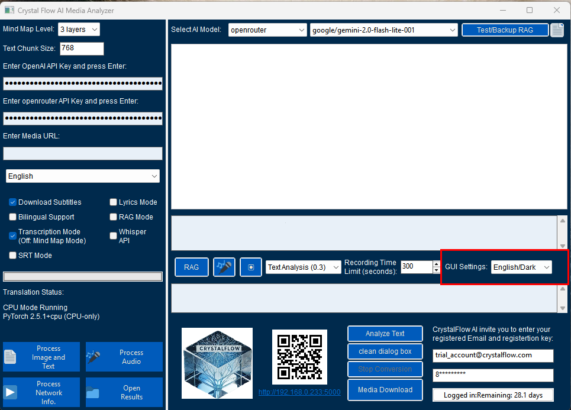
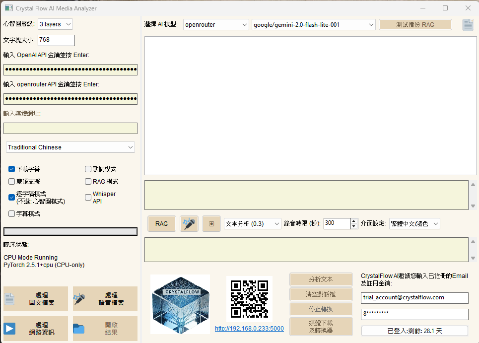
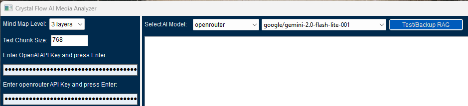
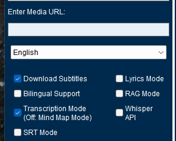

第一章：基本設定
1.1 介面設定

圖1-1：使用者設定介面
- GUI 顯示設定（四種組合可選）：選擇介面主題後，重新啟動軟體以生效
- English/Dark：英文介面搭配深色主題
- 適合習慣英文操作的使用者
- 深色主題降低眼睛疲勞
- 建議在光線較暗環境使用
- English/Light：英文介面搭配淺色主題
- 適合在日光環境下使用
- 提供最佳文字閱讀對比度
- 建議一般辦公環境使用
- 中文/Dark：中文介面搭配深色主題
- 適合中文使用者夜間操作
- 降低螢幕亮度對眼睛的刺激
- 提供舒適的中文閱讀體驗
- 中文/Light：中文介面搭配淺色主題
- 最接近傳統文件處理外觀
- 適合長時間文字處理工作
- 建議一般日常使用
- English/Dark：英文介面搭配深色主題

圖1-2：四種介面模式對比
1.2 功能設定區塊

圖1-3：功能設定區域
- 上方功能列：
- 心智圖層級選擇：預設 3 layers
- 提供3層級和4層級兩種選擇
- 3層級提供主題、重點和細節三個層級
- 4層級比3層級多了原文摘錄
- 建議根據文件複雜度進行調整，3層級適合一般文章，4層級適合學術論文，注意4層級需要更高的計算資源
- AI 模型選擇：
- gpt-4o/gpt-4o-mini：OpenAI 的 GPT-4 系列模型
- openrouter：支援多種 雲端 AI 模型, 如deepseek, claude, gemini, etc.
- lm Studio：支援多種本地 AI 模型, 如deepseek, Llama, Gemini, etc.
- 注意：lm Studio 需要先安裝本地模型，並在 lm Studio 中設定模型路徑。請參考 lm Studio 使用指南。
- 文字區塊大小：預設 768 ( 單位 tokens)
- 根據處理需求進行調整，數值越大，單次處理的文字量越多，心智圖分析結果會更具備全局觀，但可能會忽略細節。
- 反之，數值越小，內容分析會更加精細，但心智圖分析結果可能較缺乏全局觀。
- 建議：如果需要全局觀的總結 (2048)，應選擇較大的數值；如果需要細讀文章 (512)，應選擇較小的數值。
- 心智圖層級選擇：預設 3 layers
1.3 媒體輸入設定

圖1-4：媒體輸入設定
- URL 輸入欄位：
- 支援 YouTube、Facebook 等影片連結
- 支援一般網頁文章連結, 如維基百科、新聞網站、部落格等
- 功能切換選項：
- Language selection:
選擇資料處理輸出語言, 目前支援 中文, 英文, 日文, 韓文, 法文, 德文, 以及
original( 原始語言,不做語言轉換 ) - Download Subtitles：
選擇使用影片原始字幕，取消的話會使用Whipser語言模型進行語音辨識。 - Lyrics Mode：
歌詞處理模式，選擇後會使用Whisper進行語音辨識，並將辨識結果轉換為歌詞。 - Bilingual Support：
雙語支援，選擇後會使用Whisper進行語音辨識，並將辨識結果轉換為雙語歌詞或雙語心智圖。 - Transcription Mode：
將文字內容進行文法段落及標點符號的整理，如果有表格，會轉換成Markdown表格。 - SRT Mode：
字幕檔處理模式，選擇後會使用Whisper進行語音辨識，並將辨識結果加上時間戳記轉換為SRT字幕檔。 - Whisper API：
使用OpenAI的雲端Whisper API進行語音辨識，需要先設定OpenAI API Key，如果電腦沒有足夠資源跑本地語音轉文字模型，可以選擇使用雲端模型。
- Language selection: